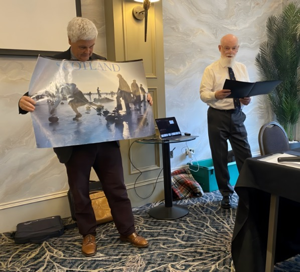
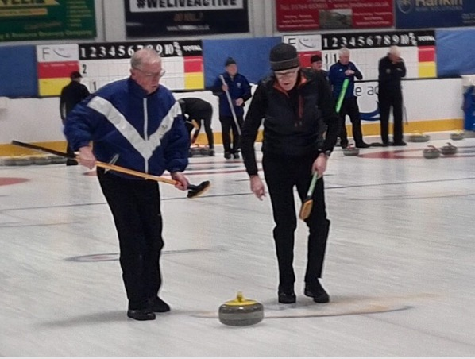
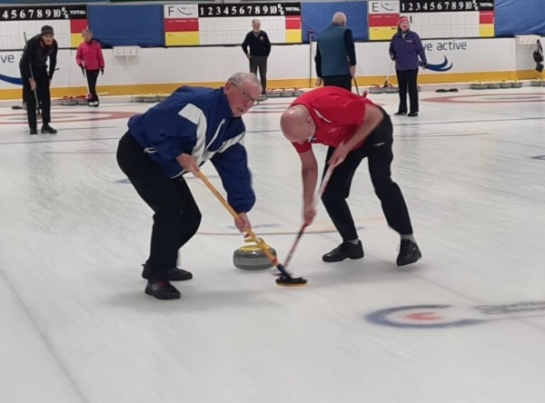

500 Years of Roaring
Ayr Rotary welcomed Dr John Burns to talk about "five hundred years of roaring" referring to the sound of curling stones as they travel down the ice. Every stone, said John, is watched by two sweepers and a skip standing in the target area and they need to continually assess whether to sweep or not. Communication between them is important and that needs shouted messages. Curling is not a silent sport.

President Howard assisting John
Curling, he continued, is one of the two great sports which Scotland gave the rest of the world. Even older than football, rugby and cricket, curling can trace its roots back to the 1500s.

In February 1541 John Slater, a monk at Paisley Abbey, threw three stones across the ice of a frozen pathway pond, to establish its weight bearing properties. He then issued a challenge to deputy Abbot Gavin Hamilton to a game of stones on the ice. Curling eventually became very much the fabric of rural Scotland.
John affirmed that Robert Burns was undoubtedly a curler as he couldn't have avoided it in the Ayrshire of his day, being able to quote all the game's technical terms.

Factually, John added, questioning his audience about the term used to describe a stone 'curling'. However, the curlers of Fenwick used their secret weapon of a 'twist' when delivering a stone, much to the concern of the traditionalists in opposing rinks (teams).
He also said the likelihood of a re-run of the last Lake of Menteith grand match in 1979 was improbable because of global warming and health & safety concerns. This is especially when a curling stone weighs 20 kilos.
John concluded his fascinating talk to the 41-strong audience by taking them on a whistle stop tour of his amazing sojourn around the world as a chief curling umpire, affirming to the non-curlers the importance of timing to prevent slow play. This was introduced to allow sufficient thinking time before each shot, with a maximum 30 minutes for each team during an 8 end game.
Curler Alec Thomson gave a humorous, relevant vote of thanks.
Share this: